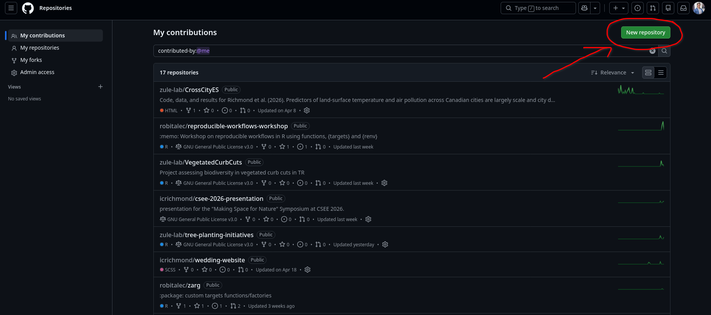
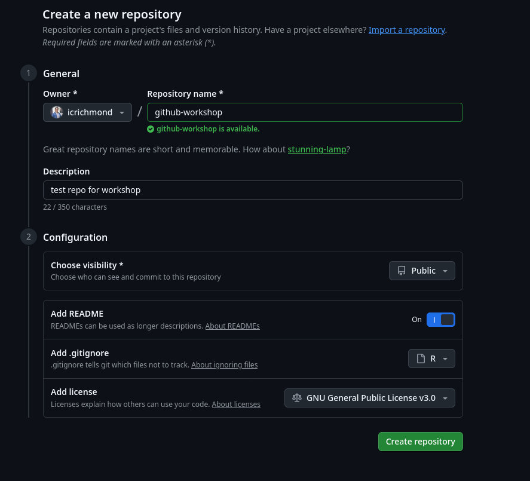
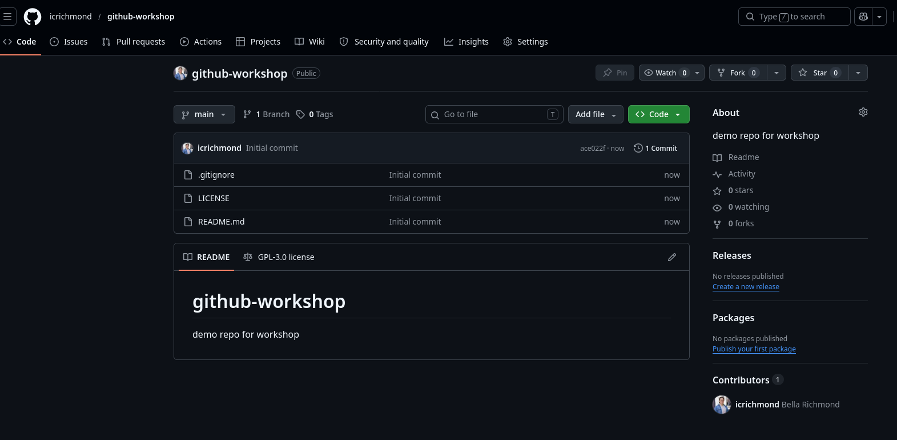
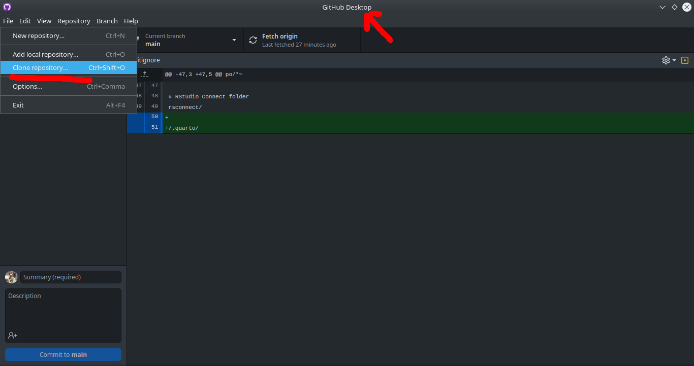
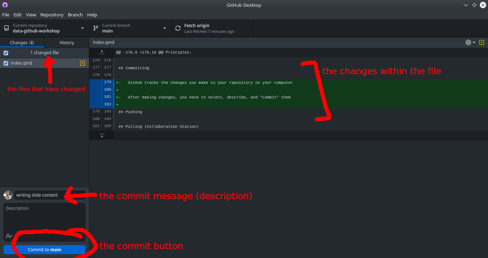
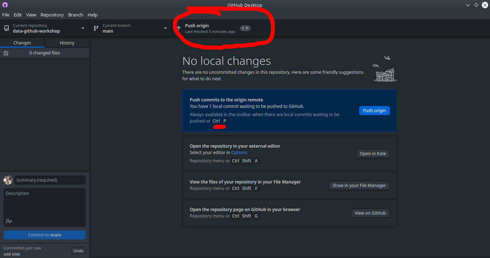

WWALK’s Data & GitHub Crash Course
2026-05-19
Part I: Prep Work
Learning Goals
My goal for this workshop is to give everyone the tools to:
- Confidently start a project in R
- Manage files in a way that is reproducible and easy to understand
- Allow people to document history/progress on their projects
- Know one approach to publicly archiving projects
GitHub Caveats
- Microsoft is a deeply evil company that profits from the war machine and the destruction of our planet
- GitHub is a Microsoft company
- There aren’t currently a lot of alternatives, but there will be eventually and you can check out this list if you’re interested
Software Installation
- CHECK-IN: does everyone have everything working/installed?
Transparent Workflows
Ensuring that your workflow is transparent is important for:
Past/Current/Future You
WWALK Lab
Collaborators
Other grad students
Scientific Community
PUBLIC
Part II: R & RStudio
Project Management in R
Good file structure is important because it 1
- Ensures the integrity of your data
- Makes it easier to share your code with people
- Makes it easier to upload your code/data with manuscript submission
- Makes it easier to come back after a break
File Management for R
Best practices include (but are not limited to) 1
- Use an R Project file so that your project is easily shareable
- Always treat raw data as read-only
- Store cleaned data in a separate folder (or distinguish clearly)
- Treat output as disposable - you should always be able to re-generate with script
- Have separate function and figure scripts
Cleaning Data in R
There are some tasks that do not need to be “as reproducible” (e.g., fixing typos) - these can be done in OpenRefine.
In general if you are:
Combining data sources
Making decisions about the data itself (e.g., removing or adding data)
Performing calculations
Renaming things
Do this in R (you will be grateful later!)
Basic File Structure
project
└───raw-data/
└───output/
└───R/
└───graphics/
└───README.mdExercise: make a project
Let’s set up a new project using RStudio Projects
Add raw-data, output, R, and graphics folders
(Bonus: I recommend you have a folder on your computer dedicated to all R projects)
Part III: GitHub
GitHub & Version Control

Piled Higher and Deeper
GitHub & Version Control
GitHub is a website-software that documents your progress on a project and allows you to do version control
- aka it takes snapshots of your progress across time so nothing gets lost
If you save rough drafts of your writing as you go along - that is version control
Really useful for when you want to go back/change your mind/re-run a test/etc.
Facilitates lower mental load + reproducible science + collaboration/sharing
Project Workflow with Git

biost@ts Git Tutorial
Project Workflow with Git + Others

biost@ts Git Tutorial
The Basics of GitHub
- 5 basic jargon terms you need to know to use GitHub:
- Repository/repo: your project
- Clone: make a local copy of your project
- Commit: describe and commit to any changes you’ve made
- Push: send your changes to your online repo
- Pull: incorporate any changes to your local repo
- (BONUS branch: a side project)
- We will do all these things today!
Exercise: make a repo!

Exercise: make a repo!

Exercise: make a repo!
github.com/icrichmond/github-workshop

Cloning (Download An Existing Directory)

Committing
GitHub tracks the changes you make to your repository on your computer
After making changes, you have to select, describe, and commit them
Committing

Pushing
After committing, you push your changes to your remote repository

Pulling (Collaboration Station)
If you are collaborating on a project, where multiple people are contributing, make sure you pull from the remote repository before starting your work
Same button as push (ctrl + shift + P)
Part IV: Archiving Data
Lab Archiving
Archiving your project in the lab requires 4 things:
- Paper/thesis
- Clean data
- Metadata
- Code
- (Bonus: presentations you have given)
These things can be organized however you’d like, as long as they are easily understood by someone after you are gone.
Where your completed project goes in the lab is a work in progress, I will update you as I work on this!
Why Using Git is not Archiving
Does not have a DOI, so does not point to a specific moment in time
Can be changed continuously
Not dedicated to longevity
Can import GitHub repository to a true data archive
Public Archiving
Zenodo is a great option for archiving data
Easily links to GitHub repositories
Preserves file structures
Can be updated after reviews/changes with a new DOI
FREE
Other options include Dryad, figshare, and more topic-specific archives (e.g., GenBank)
As always, use what works for you
Zenodo
To connect and archive your code/data with Zenodo from GitHub, there are three main steps
- Link your GitHub to your Zenodo account, and toggle “On” for your repository
- Make a release of the project on GitHub
- Obtain DOI and project page from Zenodo
(see an example workthrough here)
NOTE: you do not need to use Git to use Zenodo, you can also upload local files
The Ultimate Combo Deal


Privacy!!!
- This lab has many examples of data that should not be uploaded to the internet, that does not mean that we can not use GitHub/Zenodo/reproducible science tools
- We need to be extremely mindful, make sure our code is anonymized
- Upload fake example data so that users can understand how our code works, with clear metadata that explains that the real data is unavailable
Resources
This workshop - including examples & code can all be found here and formatted slides are here
Software Carpentry: R for Reproducible Scientific Analysis & Version Control with git
Data Carpentry: Data Analysis & Visualization in R for Ecologists & Data Organization in Spreadsheets for Ecologists
biost@ts: Version Control with Git and GitHub
Happy Git: happygitwithr
University of Bergen: Open Access to Research Data
Resources
Smart People I Know: Dr. Christie Bahlai’s Reproducible Quantitative Methods Course & Wildlife Ecology & Evolution Lab’s Guide by Alec Robitaille & Val Lucet’s Git Workshop